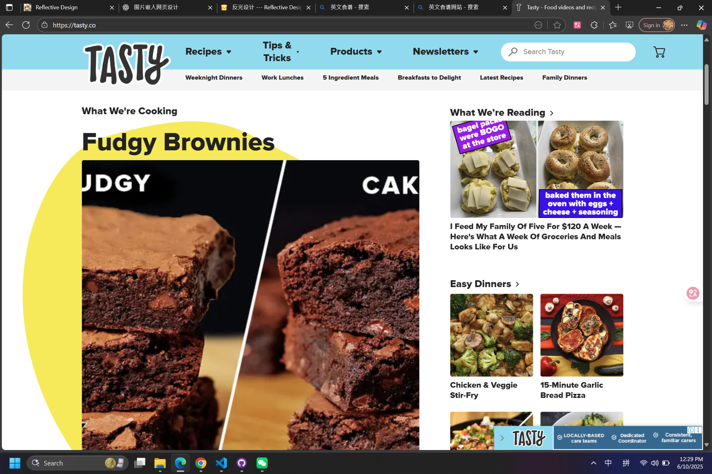
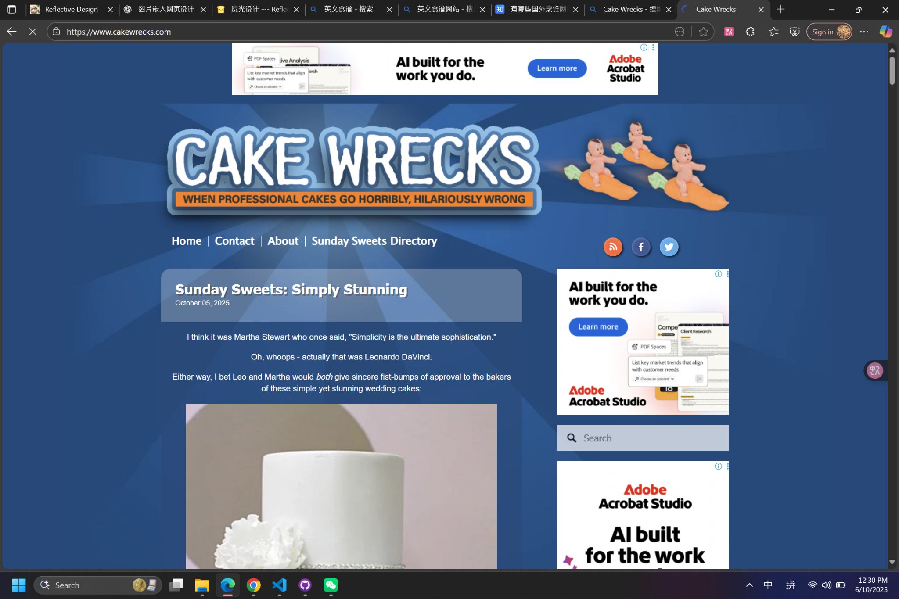
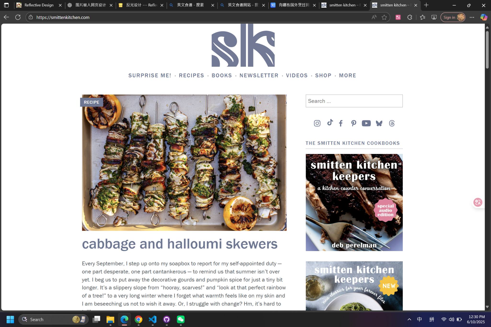
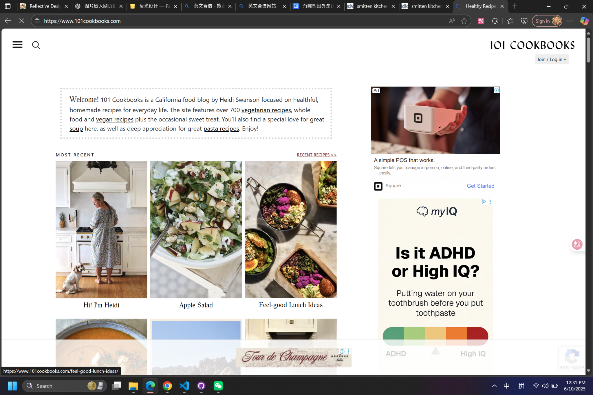
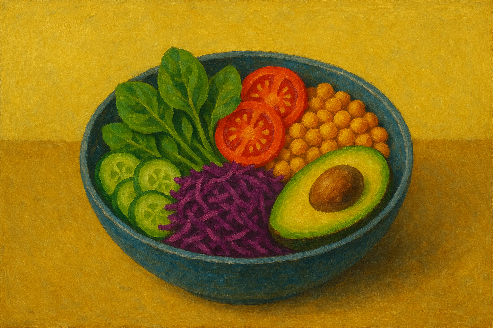
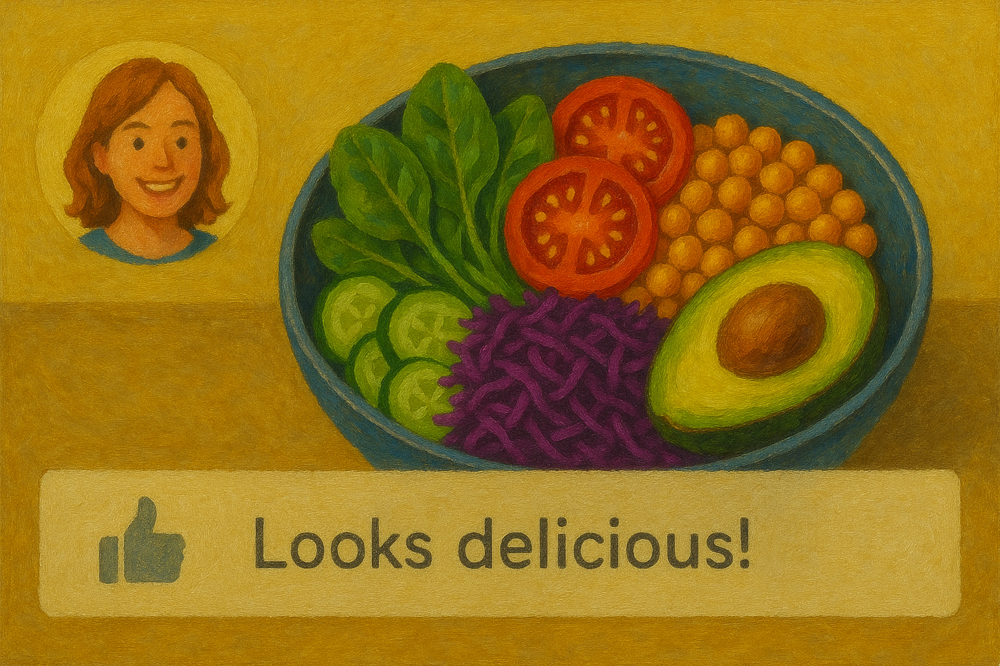
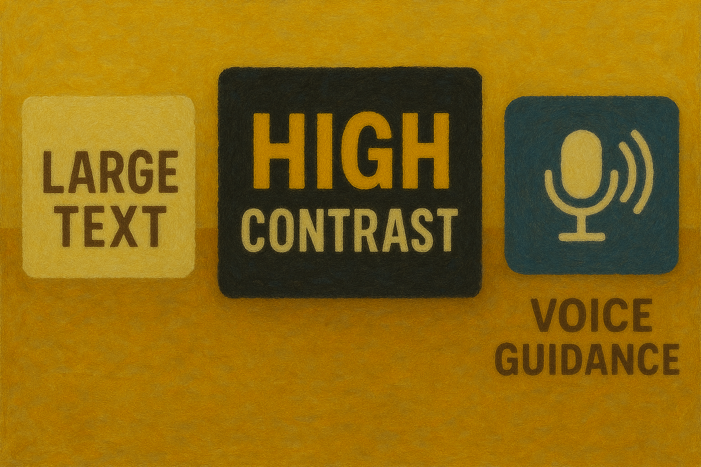

The website fosters social connection, mutual learning, and contribution.
Forum discussions, "Showcase My Recipes" gallery, chat, event sharing, and nearby-user
discovery.
The five core values above form the ethical and experiential framework of the recipe and
community platform. Efficiency & Time-Saving responds to behavioural usability principles by minimizing
interaction steps and cognitive load. Smart filters, auto-generated shopping lists, and intuitive
navigation follow WCAG 2.2 success criterion 2.4.6 (Headings and Labels) and 3.2.3 (Consistent
Navigation), ensuring users can predict interface patterns and locate content quickly.
Accessibility & Inclusivity operationalize empathy through technical compliance and experiential design.
The platform employs semantic HTML and ARIA roles (e.g., role="navigation", aria-label) to meet 1.3.1
(Info and Relationships), while providing alt-text for non-text content in accordance with 1.1.1
(Non-text Content). Full keyboard access and visible focus indicators uphold 2.1.1 (Keyboard) and 2.4.7
(Focus Visible). Adjustable text size and color contrast ratios exceed 1.4.3 (Contrast Minimum) and
1.4.4 (Resize Text), ensuring inclusive readability for low-vision users.
Transparency & Trust connect ethical communication with accessibility of information. Visible authorship
and AI-translation disclaimers follow 3.3.2 (Labels or Instructions) and 3.3.5 (Help), guiding users
clearly and preventing misunderstanding. These elements reinforce the credibility and accountability
essential for a safe digital environment.
Health & Family Well-being merges affective and functional design. Nutrition filters and child-friendly
tags comply with 2.4.5 (Multiple Ways) by offering diverse search and discovery paths. Color and
iconography maintain 1.4.11 (Non-text Contrast) and 3.3.1 (Error Identification)—for example, warning
users about allergen risks or unsuitable ingredients. This promotes informed, balanced decisions for
both adults and children.
Finally, Community & Sharing embodies inclusivity at the social level. Interactive modules like forums
and recipe galleries support 2.4.3 (Focus Order) and 4.1.3 (Status Messages), ensuring screen readers
and assistive technologies announce feedback consistently. By enabling emoji reactions, bookmarking, and
peer recognition, the platform aligns emotional design with reflective accessibility, sustaining
engagement while maintaining clarity and consistency.
Together, these five values integrate behavioural efficiency, ethical transparency, and WCAG 2.2
compliance, transforming accessibility from a checklist into a lived experience that supports equity,
confidence, and joy in every interaction.
Meaning through Imagery & Tone
Homepage Imagery

Homepage of Tasty

Homepage of Cake Wrecks

Homepage of Smitten Kitchen

Homepage of 101 Cookbooks
Website Identity
Our website represents the identity of a warm, inclusive, and empowering cooking community that values
accessibility, creativity, and cultural diversity. Positioned between the playful energy of Tasty and
the calm authenticity of 101 Cookbooks, it blends the joy of discovery with the reassurance of everyday
simplicity. This identity highlights cooking as a shared human experience—something that belongs to
everyone, regardless of time, skill, or background.
Tone of Voice
The tone of voice is friendly, uplifting, and supportive, designed to motivate users while keeping
communication simple and relatable. It avoids the irony and exaggeration found in Cake Wrecks, instead
adopting the encouraging, conversational tone of Smitten Kitchen. Every phrase aims to make users feel
capable ("You've got this!"), welcome ("Let's cook together"), and proud of their own creativity.
Imagery and Emotional Meaning
A bright kitchen scene where a family cooks together, with warm natural lighting.
Conveys belonging, safety, and happiness—reinforcing the idea of joyful everyday cooking.

Fresh vegetables and vibrant tones arranged with minimalist composition.
Represents health and creativity, showing that cooking can be quick yet fulfilling.

Users' uploaded dishes displayed with profile icons and friendly comments.
Builds connection and mutual recognition, strengthening community engagement.

Enlarged text, high-contrast color modes, and voice guidance interface.
Embodies inclusivity and equality, ensuring every user can participate confidently.
Homepage Welcome Message
"Welcome to QuickBite — your friendly space for fast, healthy, and inclusive cooking. Discover easy
20-minute meals, share your favorite recipes, and connect with cooks who believe that good food brings
people together."
Annotation: Alignment of Imagery and Language
The visual tone and written language work together to communicate the client's mission of promoting
healthy, joyful, and inclusive cooking. Warm lighting and smiling faces humanize the interface, while
bright color palettes and balanced white space express emotional clarity and openness. The welcoming
copy ("Let's cook together") reinforces belonging and empowerment, especially for users who may feel
excluded from professional cooking environments. Together, the imagery and tone create a long-term
identity of a supportive, transparent, and confidence-building community, where design and communication
work hand in hand to make cooking accessible and meaningful for everyone.
✔ Accessible to screen readers (alt text, structure, semantic HTML)
✔ Avoids jargon and culturally biased terms
Original Text
"Our platform helps people discover recipes and cook faster. Join now to find what to eat today!"
Revised Text
"QuickBite welcomes you to cook with confidence and joy. Explore quick, healthy recipes made for real
life — from solo meals to family dinners — and share your own creations with others who love good
food."
Annotation
This revised version emphasizes belonging, joy, and participation rather than only efficiency. It
reflects the site's reflective identity as a community-driven, empowering space. The phrase “welcomes
you to cook with confidence and joy” replaces directive wording with an inviting emotional tone,
consistent with the website's values of inclusivity and encouragement. It also enhances WCAG 3.1.1
readability through shorter phrases, plain vocabulary, and clear sentence rhythm, making it accessible
for multilingual and screen-reader users.
Accessibility Audit
Issue 1 - Use the <fieldset> Element to Group Logically Related Input Elements
Why this is important
Groups of related input fields (such as “Name”, “Email”, and “Message”) should be enclosed within a
<fieldset> element accompanied by a <legend>. Without this semantic grouping, screen
readers interpret each input as a separate entity, making it difficult for visually impaired users
to perceive relationships between the fields. This issue violates WCAG 2.2 - Guideline 1.3.1: Info
and Relationships.
This correction ensures a clear semantic hierarchy for assistive technologies and
improves overall keyboard navigation.
Who is affected
Blind or low-vision users relying on screen readers
Neurodivergent users who benefit from structured and clearly labeled forms
Issue 2 - Keyboard Focus Indicator Visibility When Using CSS Border or Outline
Why this is important
Keyboard users rely on visible focus indicators (usually an outline or highlight) to know which
interface element is active. If the focus indicator is removed or hidden via CSS, users navigating
with a keyboard lose their spatial awareness. This violates WCAG 2.2 - Guideline 2.4.7: Focus
Visible.
This adjustment preserves focus visibility, enhances accessibility, and maintains
design consistency.
Who is affected
Users who navigate using keyboard controls (e.g., Tab / Shift + Tab)
Users with motor impairments or temporary injuries who cannot use a mouse
Issue 3 - Text Contrast Below WCAG AA Minimum Requirement
Why this is important
Low contrast between text and its background makes reading difficult for users with low vision or
color-vision deficiencies. According to WCAG 2.2 - Guideline 1.4.3: Contrast (Minimum), normal text
must meet a contrast ratio of 4.5:1 and large text 3:1. The tested text ratio of 2.85:1 fails this
requirement.
How to fix
body {
color: #1a1a1a;/* darker text */
background-color: #ffffff;
}
Use accessible color palettes and verify with tools like WebAIM Contrast Checker.
Who is affected
Users with low vision or color blindness
Mobile users in strong light environments
Overall Reflection
Through this accessibility evaluation, I discovered how seemingly small front-end design choices—such
as borders, color contrast, and structural grouping—have significant effects on usability and
inclusion. Implementing <fieldset> elements improves semantic comprehension for screen
readers, maintaining visible focus indicators empowers confident keyboard navigation, and optimizing
contrast enhances readability for all users. Moving forward, I will systematically apply WCAG 2.2
principles during every stage of interface development. Each page will be validated using
accessibility checkers and tested with both keyboard and mouse interactions to ensure compliance and
empathy in design.
Ethical Response - Outline
Ethical Summary
Purpose and Context - The developer created a subscription plug-in for a recipe website to enhance
user
Purpose and Context - The developer created a subscription plug-in for a recipe website to enhance
user engagement, while recognising ethical responsibilities involving privacy, transparency, and
accessibility.
Core Ethical Issues - Focus on data minimisation, informed consent, user autonomy, and respect for
diversity.
Ethical Actions - Implemented double opt-in verification, visible unsubscribe options, and clear
content frequency statements to ensure voluntary and transparent participation.
Inclusivity and Accessibility - Provided culturally inclusive dietary options and designed the
interface following WCAG 2.2 guidelines for equal access.
Overall Principle - Demonstrates how an individual developer can embed professional ethics—privacy,
honesty, and inclusivity—into design practice.
Ethical Decision and Reasoning
Ethical Frameworks Applied - Decisions guided by Consequentialism (outcomes), Deontological ethics
(duty), and Virtue ethics (professional character).
ACS Code Alignment - Actions aligned with public interest, honesty, competence, privacy, respect
for diversity, and professionalism.
Balancing Ethics and Technology - Accessibility, security, and consent were treated as core
technical priorities rather than secondary features.
Practical Outcomes - Features such as double opt-in, visible focus indicators, and data deletion
policies translate ethical values into tangible interface design.
Reflection - The project illustrates how ethical awareness in individual development can strengthen
user trust and support socially responsible innovation.